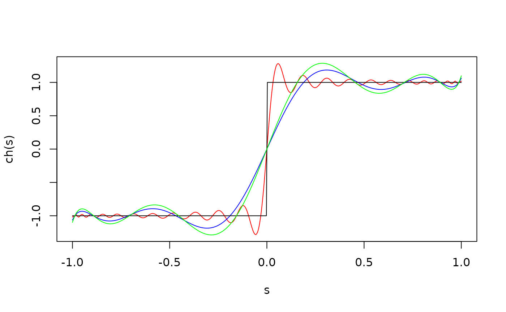

Given Chebyshev coefficients, evaluate the interpolation in a point.
Usage
chebeval(x, coef, intervals = NULL, threads = getOption("chebpol.threads"))Arguments
- x
The point to evaluate.
- coef
The Chebyshev coefficients. Typically from a call to
chebcoef(), possibly modified. A vector without adimattribute is treated as one-dimensional.- intervals
A list of minimum and maximum values. One for each dimension of the hypercube.
- threads
An integer. In case
xis a matrix of column vectors, use this number of threads in parallel to evaluate.
Examples
# make a function which is known to be unsuitable for Chebyshev approximation
f <- function(x) sign(x)
# make a standard Chebyshev interpolation
ch <- ipol(f, dims = 50, method = "chebyshev")
# then do a truncated interpolation
val <- evalongrid(f, 50)
coef <- chebcoef(val)
# truncate the high frequencies
coef[-(1:10)] <- 0
# make a truncated approximation
tch <- Vectorize(function(x) chebeval(x, coef))
# make a lower degree also
ch2 <- ipol(f, dims = 10, method = "chebyshev")
# plot the functions
s <- seq(-1, 1, length.out = 400)
plot(s, ch(s), col = "red", type = "l")
lines(s, tch(s), col = "blue")
lines(s, f(s))
lines(s, ch2(s), col = "green")
